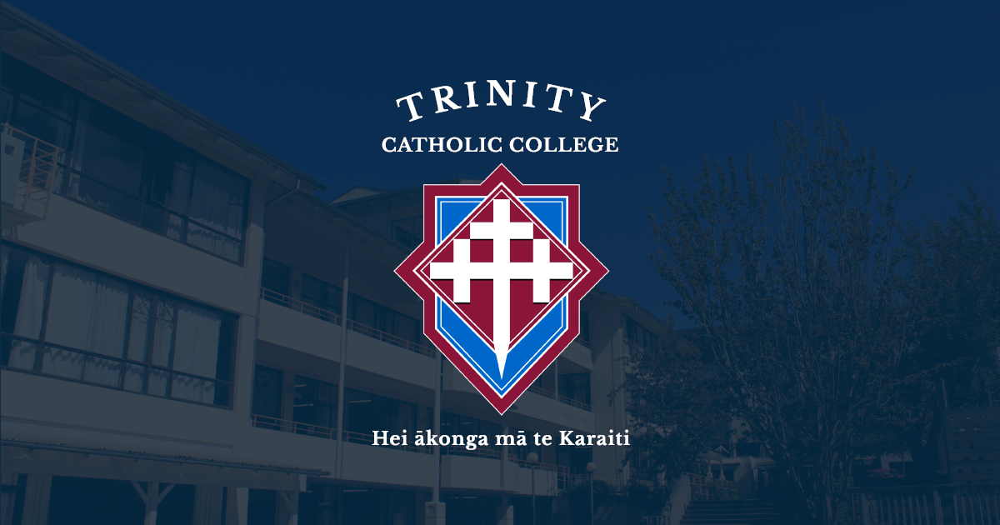

The spiritual life at Trinity Catholic College in Dunedin remains vibrant, deeply anchoring the school community in its Catholic special character. Through regular prayer, senior retreats, and student-led faith initiatives, students are encouraged to actively live out the gospel values. This strong spiritual foundation inspires them to turn their faith into meaningful action through service and social justice in the community.
